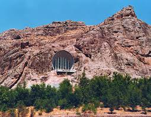
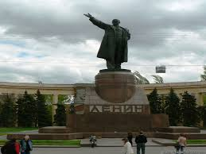

Osh
Osh es una ciudad de Kirguistán y la segunda ciudad más grande del país después de Biskek la capital, esta situada en el Valle de Fergana en el sur del país y, a menudo se la llama como la Capital del sur. Ha servido como centro administrativo de la provincia de Osh desde 1939.

Dominique: Ya veníamos de ver muchos estilos de ciudades y pueblos diferentes en Kirguistán: soviético, rurales, yurtas nómadas y nos quedaba Osh, nuestra última parada en Kirguistán. Con tan solo 300 mil habitantes constituye la segunda ciudad más importante del país. Por el contrario a Bishkek, Osh es una ciudad muy antigua, ellos mismos dicen que es «más vieja que la misma Roma». En este artículo te mostramos que ver en Osh.
La montaña Sulaiman es el únigo lugar Patrimonio de la Humanidad en el país de Kirguistán. Se encuentra en la ciudad de Osh y fue en tiempos un lugar principal de peregrinación preislámica e islámica.
Muzey Sulayman Too se encuentra dentro de una combinación de cuevas naturales y artificiales que acomodan un total de 13 salas de exhibición. El museo es único en el sentido de que el edificio es tan interesante, si no más, que las exhibiciones.
Monumento de LeninVida en las calles por el monumento Osh, la ciudad en segundo lugar más grande de Lenin de Kirguistán, situada en el valle de Fergana en Asia Central Un lugar popular a colgar alrededor para la juventud
Los Murales edificios administrativos, tuberías de gas que no están soterradas… Son aspectos que vienen sí o sí de la época socialista, terminada hace más de 25 años. En Osh podemos ver un gran espectáculo de recuerdos al socialismo impuesto por la Unión Soviética el siglo pasado.